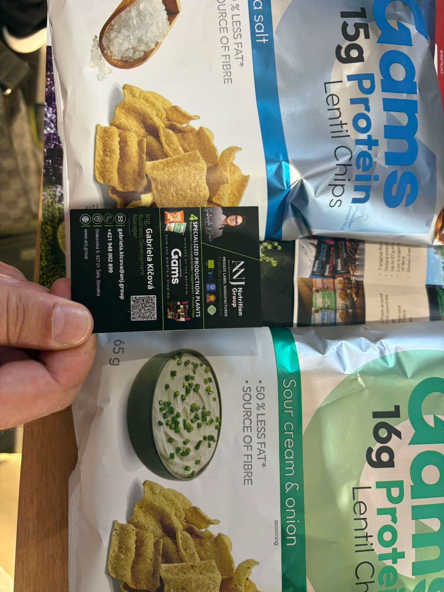
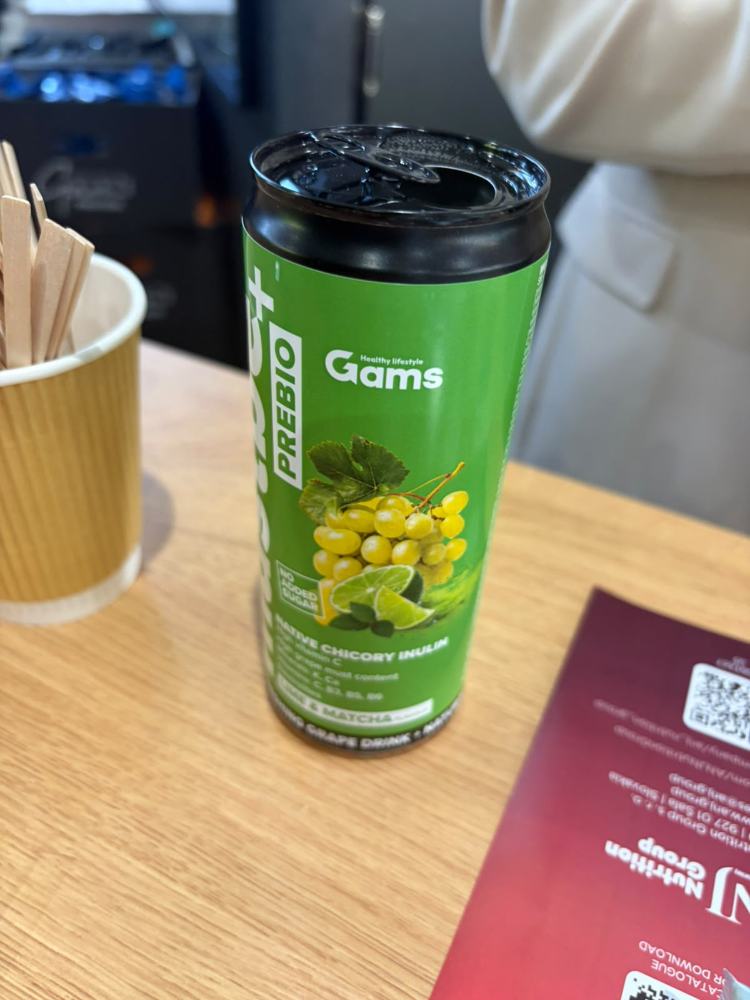
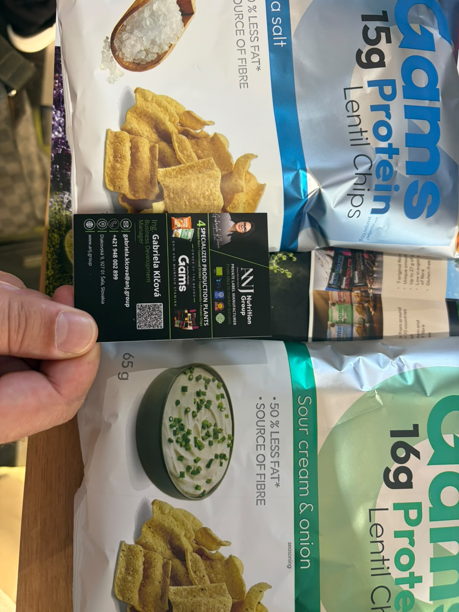
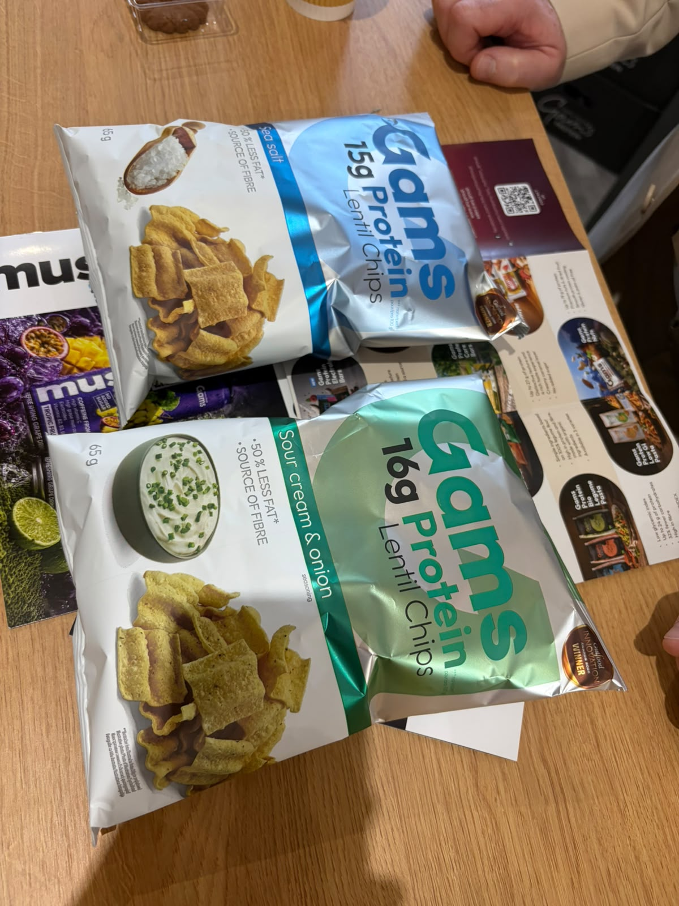
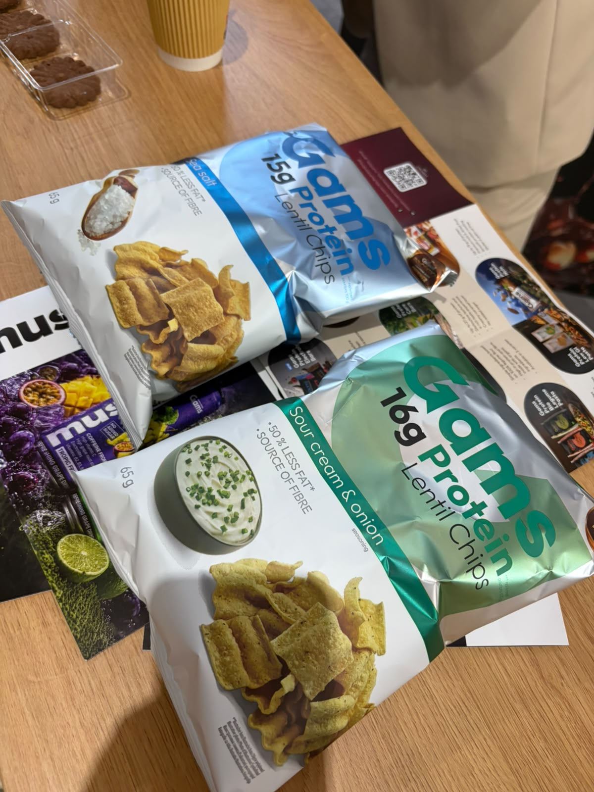
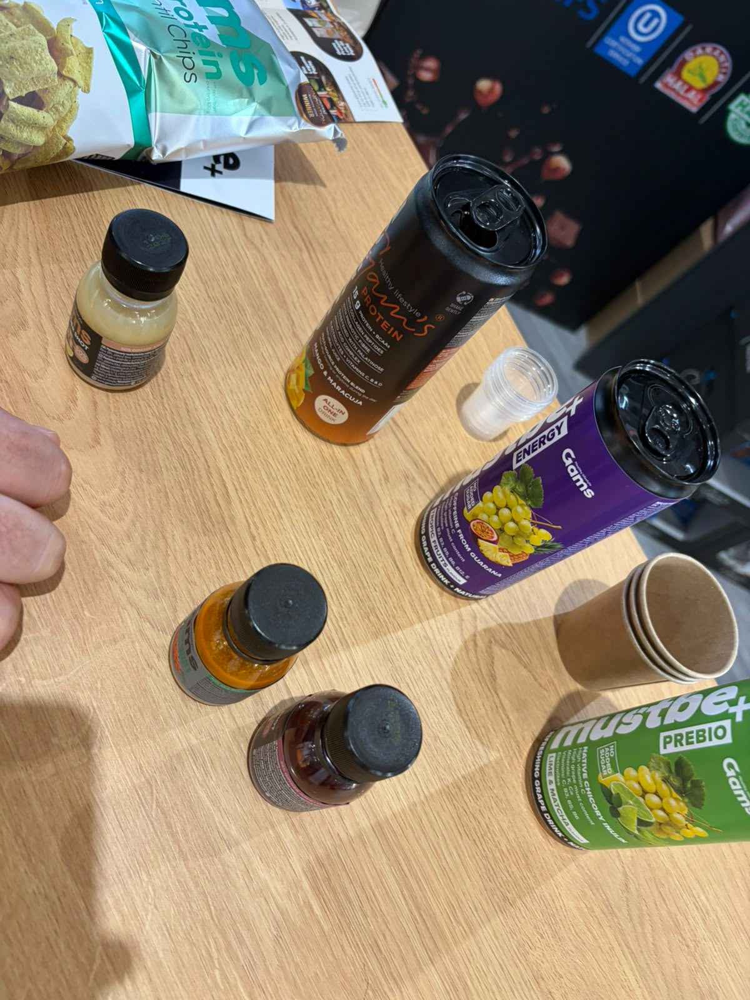

ANJ Nutrition Group / Gams
تصنيع بعلامة خاصة ومشروبات وسناكات
الوكيل الحصري في السعودية
لم يُعثر في البحث العام على دليل موثوق يثبت وجود وكيل حصري لهذه الشركة في السعودية أو ينفيه. لا تُعدّ السوق متاحة حصريًا قبل رد الشركة.
- الجهة
- لم تُثبت جهة سعودية محددة
- نطاق الدليل
- ANJ Nutrition Group / Gams
- تاريخ البحث
- 21 أكتوبر 2026
الخطوة التالية: طلب تأكيد مكتوب باسم الوكيل، ونطاق السعودية، والعلامات والأصناف وقنوات البيع، وسريان الحصرية.
المصادر وطريقة التحقق
- الموقع المرجعي للشركة / صفحة التواصل
مرجع للاستفسار المباشر؛ ليس شهادة بعدم وجود وكيل.
بحث باسم الشركة والعلامات مع السعودية والتوزيع والوكالة، ومراجعة المصادر العامة المتاحة. لم يتم التواصل مع الشركة أو الاطلاع على عقد وكالة.
المنتجات والمجال
- Gams Lentil Chips — Sea Salt وSour Cream & Onion؛ 65g ظاهر
- مشروبات Gams PREBIO وشوتات ظاهرة
- البطاقة تعرض Protein Bars وFunctional Drinks وSupplements وProtein Chips ضمن التصنيع للغير
بطاقة الملف
الجناح
غير مثبت
العنوان
غير موضح
حالة المتابعة
صور وبيانات المعرض محفوظة — لم يُعتمد توريد
وسائل التواصل
Ing. Gabriela Klčová
Business Development Manager
بطاقة الأعمال المصورة في المعرض بتاريخ 18 أكتوبر 2026
ملاحظات الملف
قيم 15g و16g Protein و50% less fat من الملصق وليست تحققًا مخبريًا. العنوان: Diakovská 9, 927 01 Šaľa, Slovakia.
أوصاف المنتجات والفوائد الواردة على العبوات منسوبة للمصنع، وليست تقييمًا طبيًا أو اعتمادًا للتوريد.
الصور وبطاقات الأعمال
اضغط على الصورة لفتح الأصل بالحجم الكامل.











